01
Project overview
This was an industry-sponsored project with FICO, the company behind the FICO credit score and a range of risk products for banks. FICO's UX VP and Product Manager defined the brief, provided the real dataset, and answered our questions in weekly sessions throughout, and the VP returned at the end to evaluate the final design. The brief was to design an analytics and operations dashboard for fraud managers working in credit card fraud call centers.
I owned the manager experience, designing dashboards that give managers real-time visibility into agent and queue performance so they can make fast, data-driven decisions. This worked in tandem with a parallel design for the agent side. While my partner designed the individual agent's workflow, I designed the manager's view of that same agent's performance, creating a unified product with two complementary perspectives.
A key requirement of the brief was integrating gamification elements to improve productivity, accuracy, and employee engagement in a high-pressure environment.
02
Problem & goal
Problem
Fraud managers lack real-time visibility into performance and fraud trends, leading to reactive decisions, inefficiencies, and employee burnout.
Goal
A centralized manager dashboard that combines real-time analytics, actionable controls, and gamification to improve decision-making, productivity, and employee experience.
03
Jobs-to-be-done
This project used a Jobs To Be Done (JTBD) framework because the problem space is highly operational and task-driven, with clearly defined roles and success metrics. Fraud managers’ effectiveness depends on completing time-sensitive tasks such as monitoring performance, reallocating resources, and responding to system signals, rather than on individual traits or preferences.
JTBD shifted the focus from who the users are to what they need to accomplish in specific situations. This made it easier to translate requirements into clear use cases and tasks, directly informing the dashboard’s information architecture, workflows, and action points.
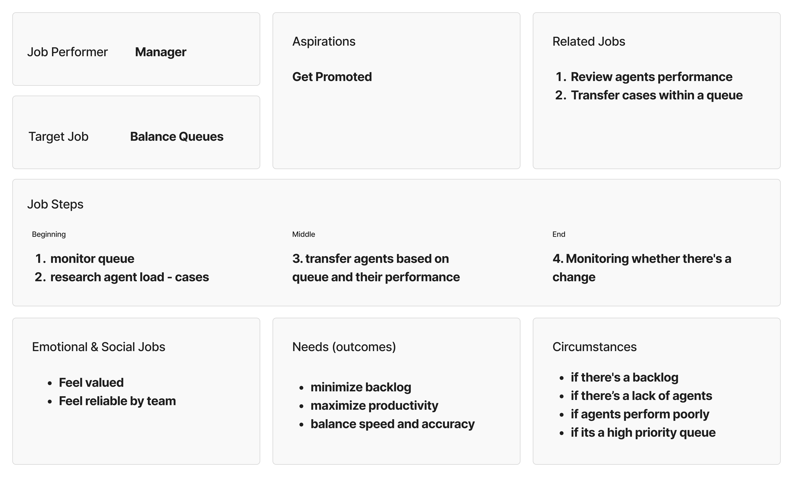
04
Conceptual models
Conceptual models were used to define how the system works before moving into screen design. They helped break down a complex product into clear objects, actions, data, and tasks, creating a shared structure for the system.
Using conceptual models reduced unnecessary complexity and made interactions more consistent and predictable. This foundation allowed the design to scale cleanly as more data, features, and workflows were added.
An Object × Action table defined which actions managers can perform on core system objects (investigators, queues, models, and cases), ensuring clear permissions and actionable UI controls.
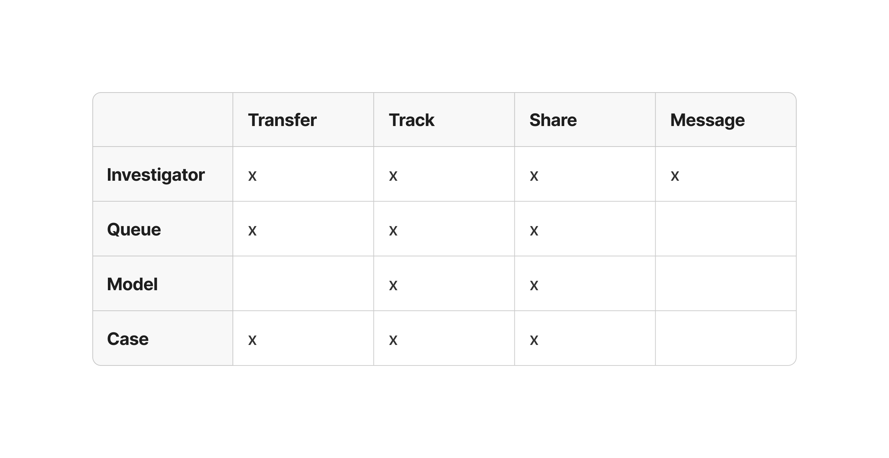
For each object in the Object × Action table, transactional IxD attributes were defined using an Attributes table and a Measure + Unit table. This helped determine what information should be presented on each page and which measures needed to be visualized using charts, graphs, or tables. Defining these attributes also supported understanding relationships between measures and informed how data was structured across views.
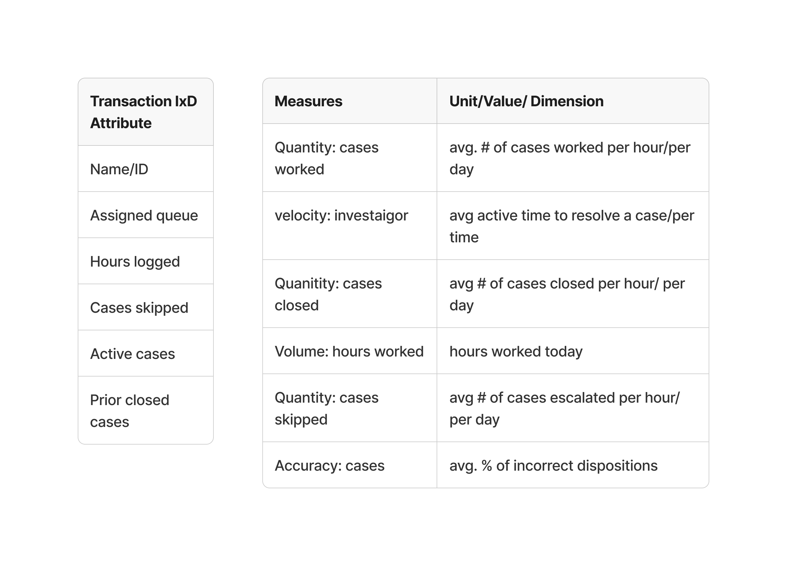
A prioritization table was created using the Object × Action table and the Attributes table, including measures and units. Tasks were grouped by how often they happen as frequent, medium, or rare, which helped decide what should be most visible and what could be placed deeper in the interface.
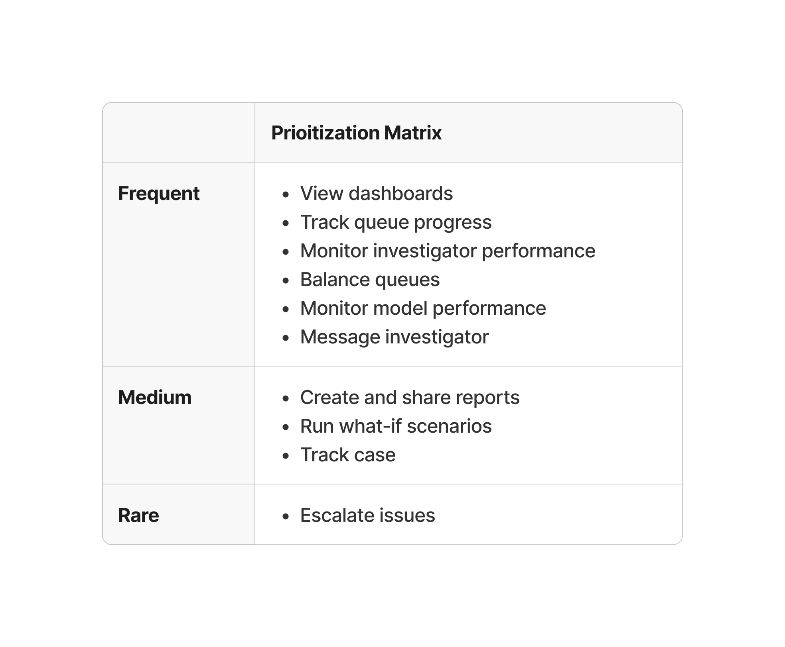
05
High-fidelity prototypes — iterations
Transfer agent
Initial prototype
The initial design feedback surfaced two key issues in the transfer-agent flow:
- No visibility into how transferring an agent would affect queue load
- Redundant agent selection, requiring multiple clicks across screens and overlays
Refined prototype
In the refined design, these were resolved by:
- Displaying current queue status and post-transfer forecasts upfront
- Allowing agent re-selection within the same interaction, reducing friction
Additional screen iterations
After receiving feedback on the initial design, I iterated to improve visual consistency, interaction clarity, and engagement. Feedback addressed:
- Standardized screen dimensions across the flow
- Established a consistent title hierarchy and labeling system
- Expanded the transfer interaction to provide clearer, more flexible options (shown above)
- Introduced gamification elements to increase engagement and system transparency
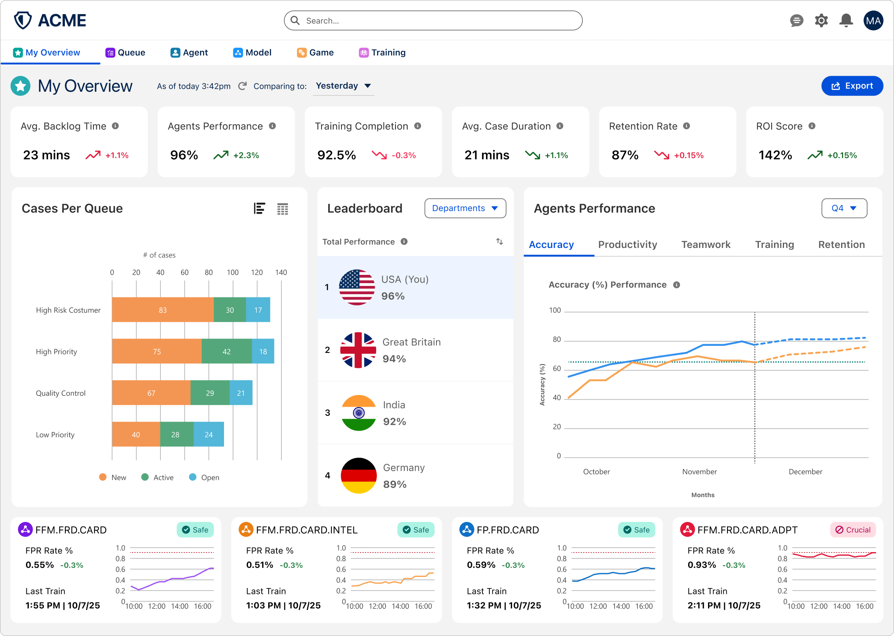
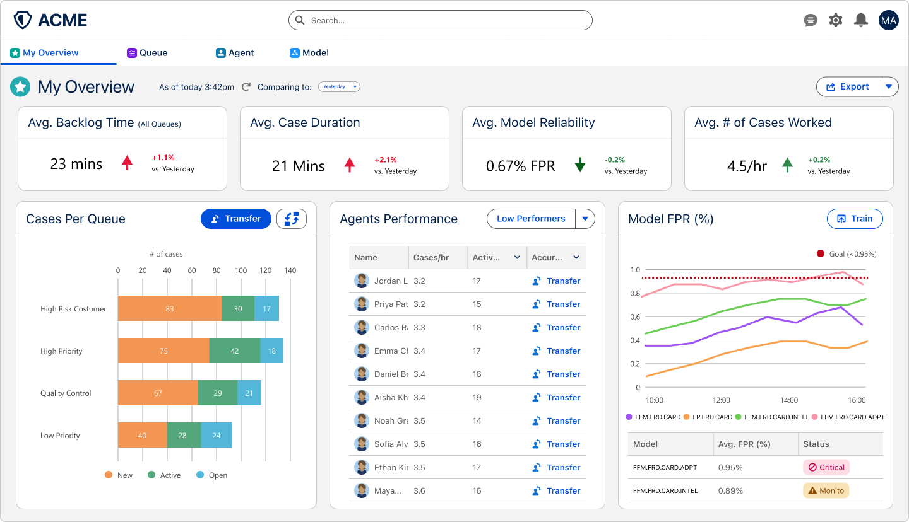
Expanded the KPI row from four to six metrics (adding agent performance, training completion, retention and ROI), added a department leaderboard, turned agent performance into a tabbed chart with a forecast, and gave each fraud model its own status card.
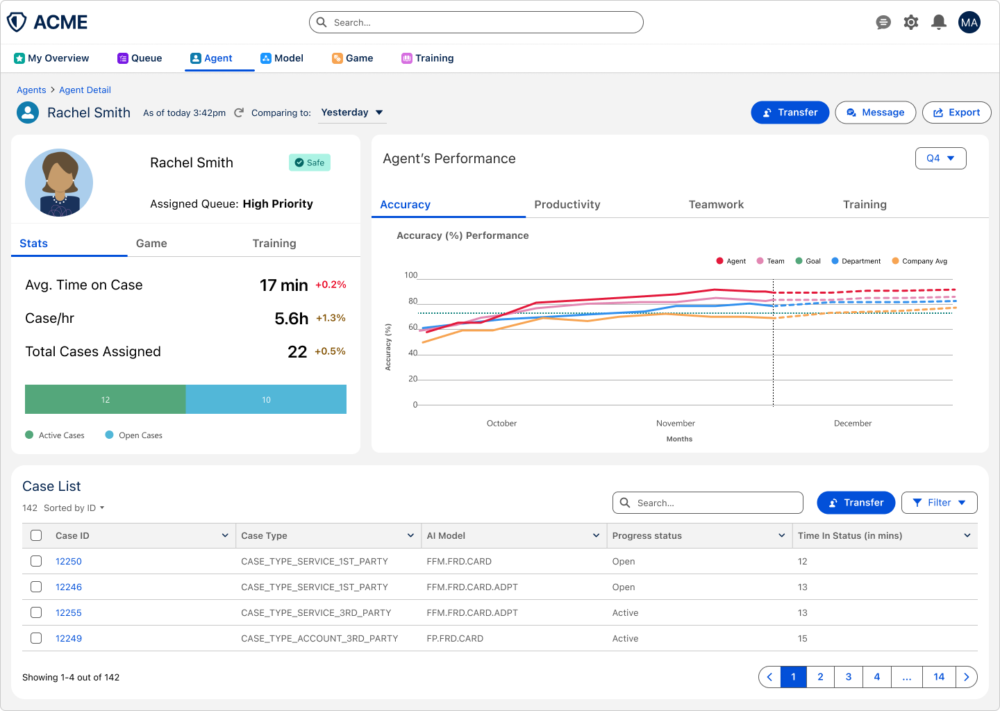
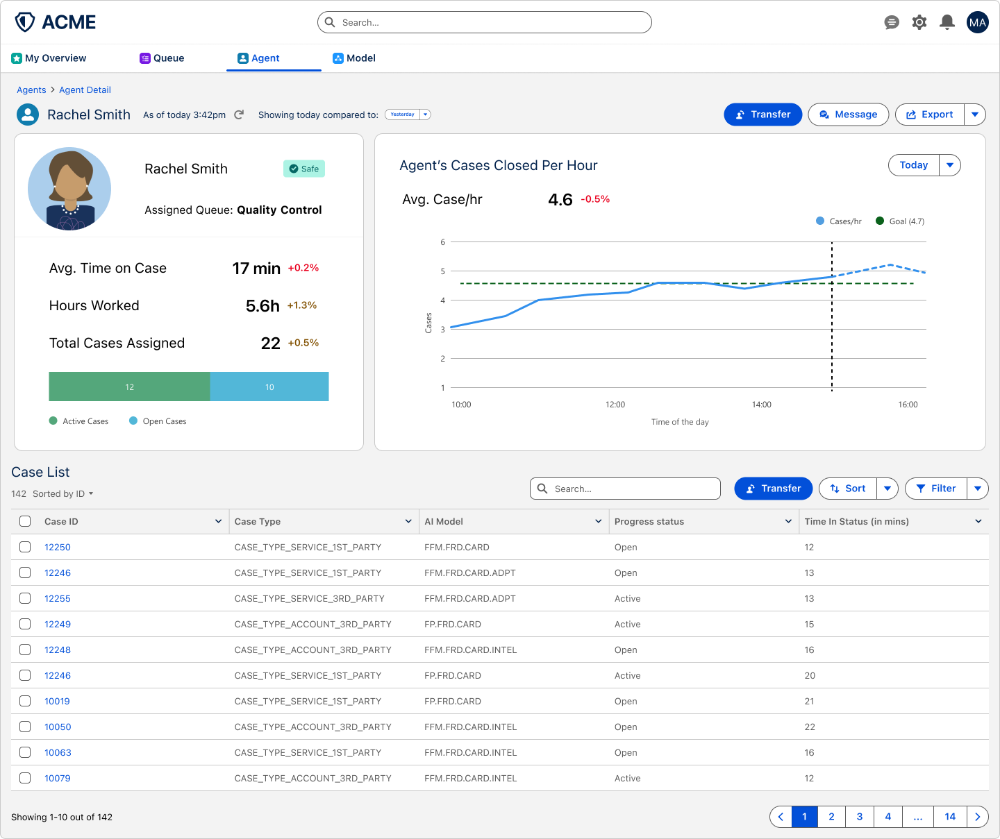
Added Stats, Game and Training tabs to the agent profile, replaced the single cases-per-hour chart with a tabbed performance chart that compares the agent with their team, department, company average and goal, and shortened the case list to keep the page scannable.
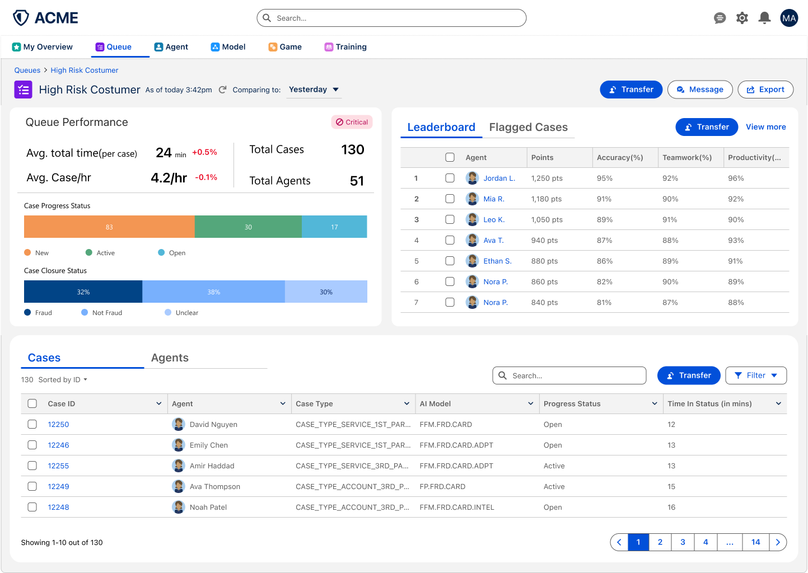
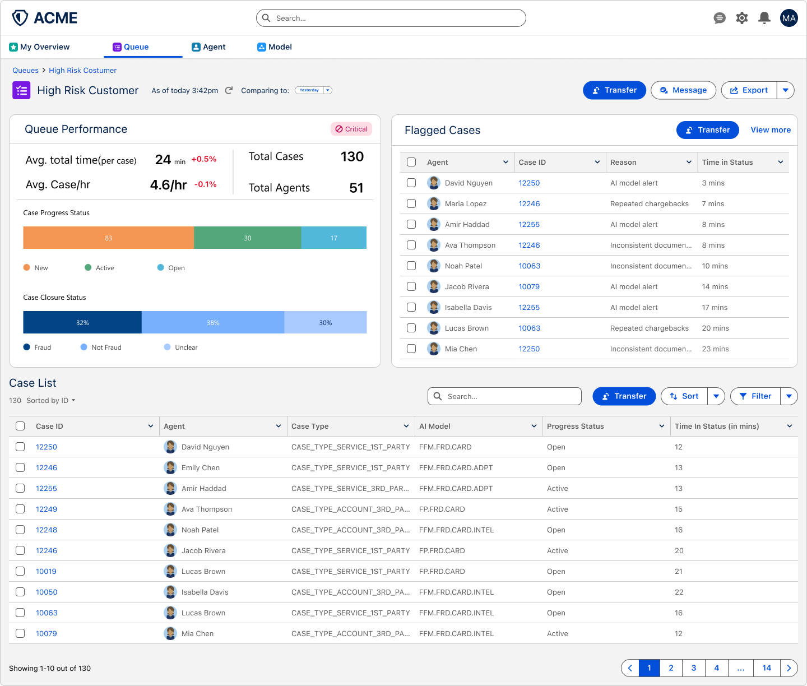
Paired flagged cases with a points-based leaderboard in one tabbed panel, and added Cases and Agents tabs to the list so managers can switch views without leaving the queue.
06
New screens
As part of the gamification requirement, I designed two new screens to boost agent performance, accuracy, and teamwork. The Game screen introduces progress tracking and achievement elements to increase engagement during work. The Training screen allows managers to assign courses and track agent progress, connecting skill development directly to performance outcomes.
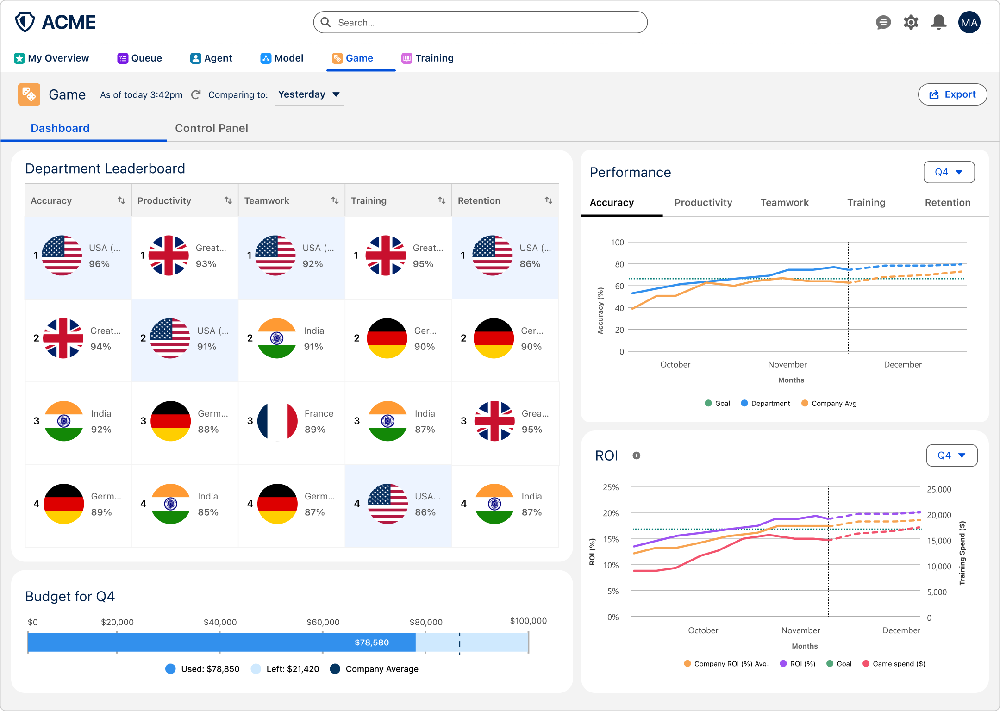
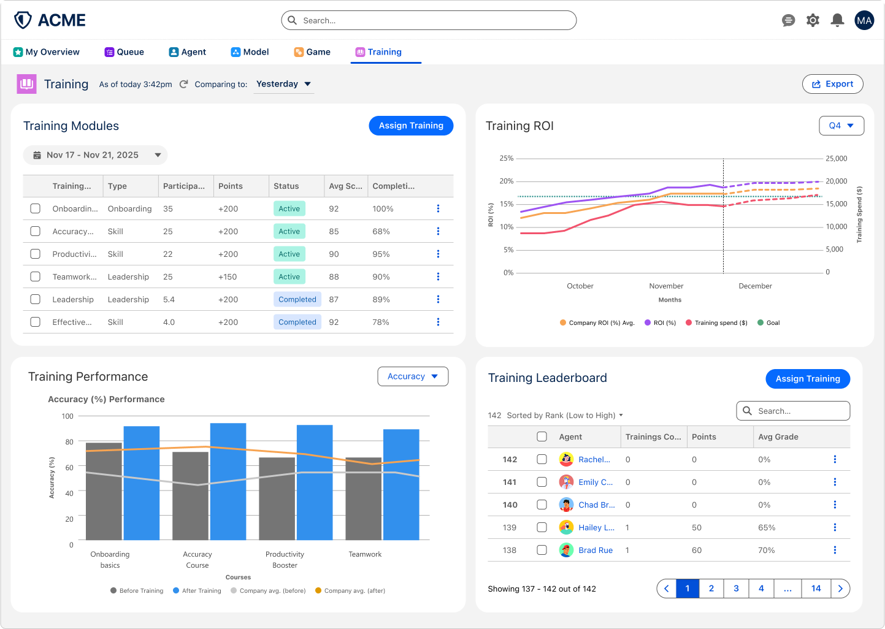
07
Learnings
-
01
Data visualization
Deepened my ability to convey complex operational data through charts, graphs, and dashboards by selecting the right visualization for each use case and user question.
-
02
Micro-interactions
Refined interaction patterns such as filtering, sorting, and drill-down to details, enabling users to explore data progressively without overwhelming the interface.
-
03
Gamification
Learned how to apply gamification thoughtfully to increase engagement, motivation, and system transparency without distracting from core tasks.
-
04
Jobs To Be Done
Strengthened my use of the JTBD framework to ground design decisions in user intent and outcomes, ensuring solutions addressed real operational needs rather than surface-level features.